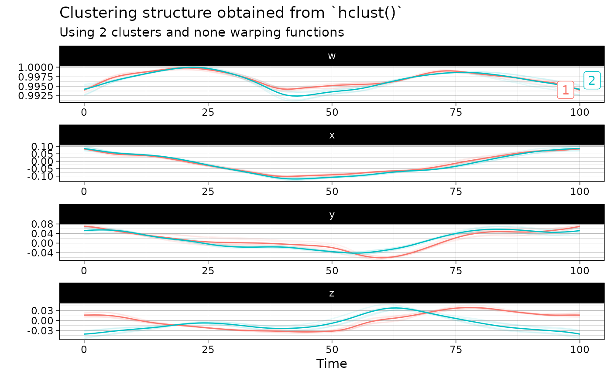

This function massages the input quaternion time series to apply hierarchical agglomerative clustering on them, with the possibility of separating amplitude and phase variability and of choosing the source of variability through which clusters should be searched.
Usage
hclust(x, metric, linkage_criterion, ...)
# Default S3 method
hclust(
x,
metric = c("euclidean", "maximum", "manhattan", "canberra", "binary", "minkowski"),
linkage_criterion = c("complete", "average", "single", "ward.D2"),
...
)
# S3 method for class 'qts_sample'
hclust(
x,
metric = c("l2", "normalized_l2", "pearson"),
linkage_criterion = c("complete", "average", "single", "ward.D2"),
n_clusters = 1L,
is_domain_interval = FALSE,
transformation = c("identity", "srvf"),
warping_class = c("none", "shift", "dilation", "affine", "bpd"),
centroid_type = "mean",
cluster_on_phase = FALSE,
...
)Arguments
- x
Either a numeric matrix of data, or an object that can be coerced to such a matrix (such as a numeric vector or a data frame with all numeric columns) or an object of class qts_sample.
- metric
A character string specifying the distance measure to be used. This must be one of
"euclidean","maximum","manhattan","canberra","binary"or"minkowski"ifxis not a QTS sample. Otherwise, it must be one of"l2","pearson"or"dtw".- linkage_criterion
A string specifying which linkage criterion should be used to compute distances between sets of curves. Choices are
"complete"for complete linkage,"average"for average linkage and"single"for single linkage. Seestats::hclust()for more details. Defaults to"complete".- ...
Further graphical arguments. E.g.,
cexcontrols the size of the labels (if plotted) in the same way astext.- n_clusters
An integer value specifying the number of clusters. Defaults to
1L.- is_domain_interval
A boolean specifying whether the sample of curves is defined on a fixed interval. Defaults to
FALSE.- transformation
A string specifying the transformation to apply to the original sample of curves. Choices are no transformation (
transformation = "identity") or square-root velocity functiontransformation = "srvf". Defaults to"identity".- warping_class
A string specifying the class of warping functions. Choices are no warping (
warping_class = "none"), shifty = x + b(warping_class = "shift"), dilationy = ax(warping_class = "dilation"), affiney = ax + b(warping_class = "affine") or boundary-preserving diffeomorphism (warping_class = "bpd"). Defaults to"none".- centroid_type
A string specifying the type of centroid to compute. Choices are
"mean","median""medoid","lowess"or"poly". Defaults to"mean". If LOWESS appproximation is chosen, the user can append an integer between 0 and 100 as in"lowess20". This number will be used as the smoother span. This gives the proportion of points in the plot which influence the smooth at each value. Larger values give more smoothness. The default value is 10%. If polynomial approximation is chosen, the user can append an positive integer as in"poly3". This number will be used as the degree of the polynomial model. The default value is4L.- cluster_on_phase
A boolean specifying whether clustering should be based on phase variation or amplitude variation. Defaults to
FALSEwhich implies amplitude variation.
Value
An object of class stats::kmeans or stats::hclust or
dbscan_fast if the input x is NOT of class qts_sample. Otherwise,
an object of class qtsclust which is effectively a list with four
components:
qts_aligned: An object of classqts_samplestoring the sample of aligned QTS;qts_centers: A list of objects of classqtsrepresenting the centers of the clusters;best_clustering: An object of classfdacluster::capsstoring the results of the best k-mean alignment result among all initialization that were tried.call_name: A string storing the name of the function that was used to produce the clustering structure;call_args: A list containing the exact arguments that were passed to the functioncall_namethat produced this output.
Examples
out <- hclust(vespa64$igp[1:10], n_clusters = 2)
plot(out)
